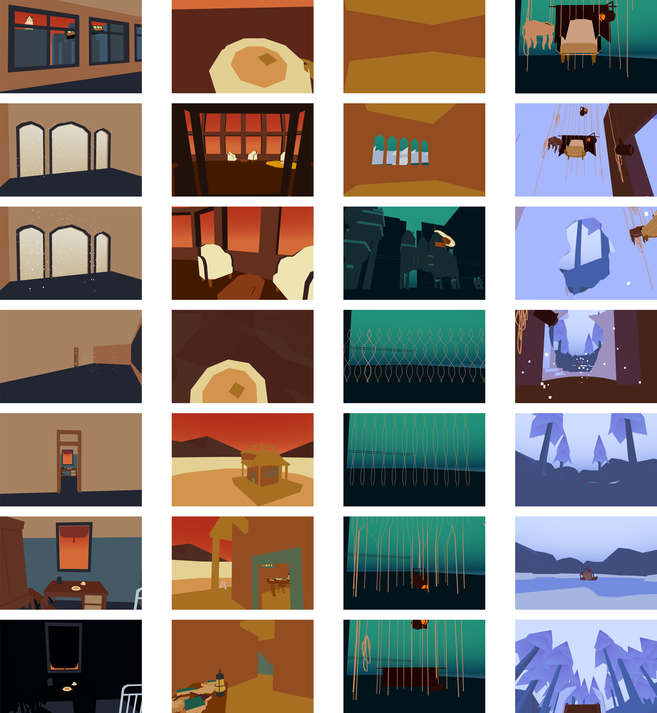
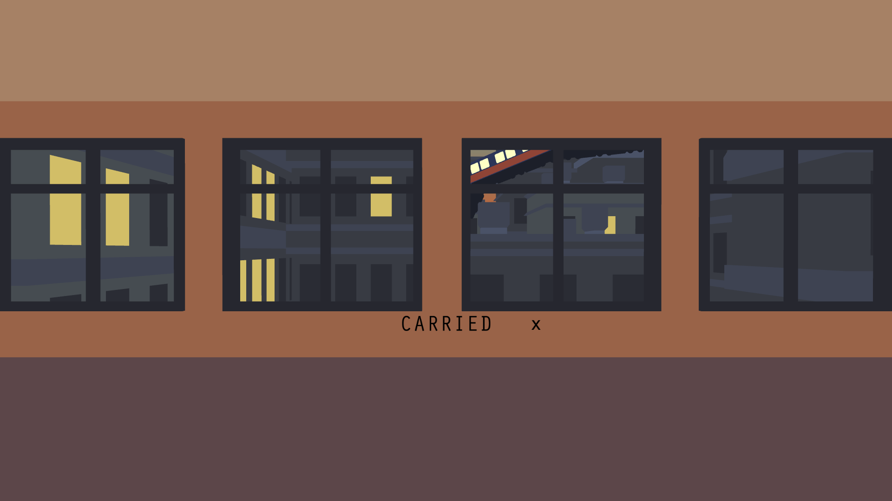
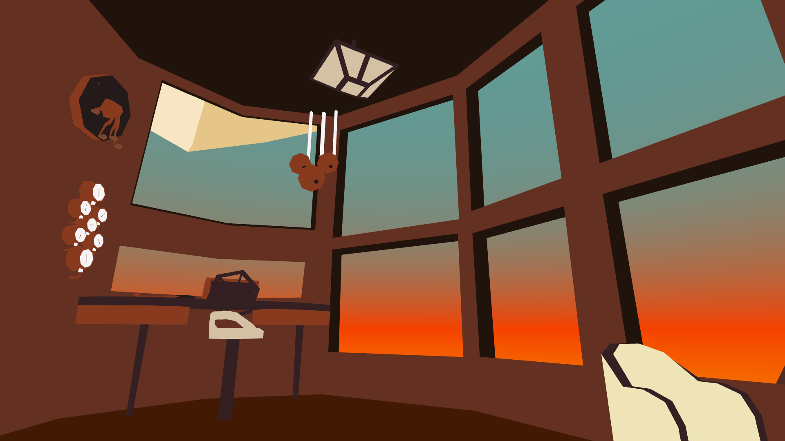

Carried is an experimental game and thesis paper. In the game, a story about escapism and disconnect is told through a series of virtual settings. The focus of the research was how a player could be moved between scenes. The project features a variety of unconventional transitions aimed at seamlessly changing one location into a completely new one. How would it affect the experience to suddenly find one's self somewhere new?
I was inspired by how animation sometimes uses visual tricks or abstraction to bend space and reality in interesting ways. I wondered if games could do the same, and what that answer might reveal about the differences between these two media.
I looked for examples of games that played with space and the perception of reality to get a better sense of what would be possible. In a search for relevant academic writing, I found many early filmmakers had already written much about the relationship between perceived reality, the camera, and how connections could be made between disparate places (shots) to tell a story. The field of cognitive science held a lot of interesting research on optical illusion. Of course, I also reflected on video game and new media theories. I wrote about my findings and made a game to better understand these ideas in a practical context.

I learnt that in games, player camera control really changes the types of visual tricks that can be employed. I found that disorientation is especially impactful in games because players rely heavily on clear spatial queues to find their way around. I discovered that it was really important for the story to reflect the very spatial way I was telling it, or vice versa. Finally, I learnt that players will accept a lot of abstraction or breaks in established reality if it happens in front of them rather than outside their field of vision.
For more info: I've written about the experience on my blog .